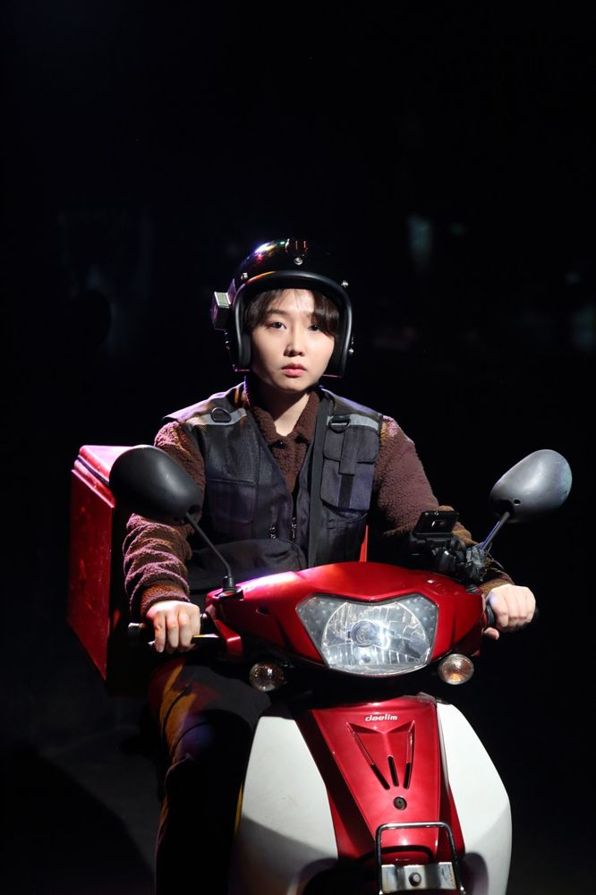

Green Pig > Archive > Delivery Return

A delivery job, taken because it was supposedly easier than other work and paid as much as you put in. But accidents keep happening during deliveries, and each time he wakes up it is the moment just before the accident again. Part of the 2019 Yeonwoo Mudae Propaganda Series on the theme of "labor," shining a light on places we may have glimpsed or never seen.
2019.12.20–29 / Yeonwoo Theater - Yeonwoo Mudae Propaganda Series
Director: Park Hyunji
Cast: Kim Dasom, Kim Cheongsun, Lee Dongyeong, Lee Rugyeom
Lighting: Kim Sohyeon
Graphic design: Workroom
Operator: Choi Munseok, Choi Jihyeon
Production: Green Pig
Sponsored by: Yeonwoo Mudae
Previous: Phantom Neuro | Next: Labor Landscape 1: Unemployment
Back to the archive | Any work
Published 2026.11.13